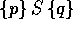
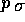
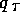

We axiomatise Hoare Logic in LEGO and thus assign a semantics to the imperative programming language. The LEGO system uses the kind Prop as its logical universe, in fact, Prop is isomorphic to intuitionistic higher-order logic. But we are not only interested in formulae of raw intuitionistic higher-order logic, we also want to talk about the value of variables which depend on a dynamic environment. We therefore use the kind Env->Prop. It is straightforward to lift operations from Prop to Env->Prop e.g, limplies denotes implication. Hoare triples  intuitively assert that if the program S is executed in a state such that  holds and S terminates, then it will produce a state such that  holds.
The most complicated rule deals with the assignment statement
because general updating is not expressible within the type theory, but fortunately, we only have to update values of variables. These are guarded by environments and therefore, updating can be achieved by functional composition.
** Module lib_hoare Imports lib_update lib_ipl
$HD :
{sort|location->Type}((Env sort)->Prop)->(prog|sort)->
((Env sort)->Prop)->Prop
$Inv : {sort|location->Type}{p:(Env sort)->Prop}HD p (skip|sort) p
$Assign :
{sort|location->Type}{x:location}{t:(Env sort)->sort x}
{p:(Env sort)->Prop}
HD (compose p (update|sort x t)) (assign|sort x t) p
$Seq :
{sort|location->Type}{p,q,r:(Env sort)->Prop}{S1,S2:prog|sort}
(HD p S1 r)->(HD r S2 q)->HD p (seq S1 S2) q
$Ifthenelse :
{sort|location->Type}{p,q:(Env sort)->Prop}{b:(Env sort)->bool}
{S1,S2:prog|sort}
(HD ([sigma:Env sort]and (p sigma) (is_true (b sigma))) S1 q)->
(HD ([sigma:Env sort]and (p sigma) (is_false (b sigma))) S2 q)->
HD p (ifthenelse b S1 S2) q
$While :
{sort|location->Type}{p:(Env sort)->Prop}{b:(Env sort)->bool}
{S:prog|sort}
(HD ([sigma:Env sort]and (p sigma) (is_true (b sigma))) S p)->
HD p (while b S)
([sigma:Env sort]and (p sigma) (is_false (b sigma)))
$Con :
{sort|location->Type}{p,p1,q,q1:(Env sort)->Prop}{S:prog|sort}
(limplies p p1)->(limplies q1 q)->(HD p1 S q1)->HD p S q
$HD_elim :
{sort|location->Type}
{C_HD:((Env sort)->Prop)->(prog|sort)->((Env sort)->Prop)->Prop}
({p:(Env sort)->Prop}C_HD p (skip|sort) p)->
({x:location}{t:(Env sort)->sort x}{p:(Env sort)->Prop}
C_HD (compose p (update|sort x t)) (assign|sort x t) p)->
({p,q,r:(Env sort)->Prop}{S1,S2:prog|sort}(C_HD p S1 r)->
(C_HD r S2 q)->C_HD p (seq S1 S2) q)->
({p,q:(Env sort)->Prop}{b:(Env sort)->bool}{S1,S2:prog|sort}
(C_HD ([sigma:Env sort]and (p sigma) (is_true (b sigma))) S1 q)->
(C_HD ([sigma:Env sort]and (p sigma) (is_false (b sigma))) S2 q)->
C_HD p (ifthenelse b S1 S2) q)->
({p:(Env sort)->Prop}{b:(Env sort)->bool}{S:prog|sort}
(C_HD ([sigma:Env sort]and (p sigma) (is_true (b sigma))) S p)->
C_HD p (while b S)
([sigma:Env sort]and (p sigma) (is_false (b sigma))))->
({p,p1,q,q1:(Env sort)->Prop}{S:prog|sort}(limplies p p1)->
(limplies q1 q)->(C_HD p1 S q1)->C_HD p S q)->{p:(Env sort)->Prop}
{S:prog|sort}{q:(Env sort)->Prop}(HD p S q)->C_HD p S q
* Conl = ... :
{sort|location->Type}{p,p1,q:(Env sort)->Prop}{S:prog|sort}
(limplies p p1)->(HD p1 S q)->HD p S q
* Conr = ... :
{sort|location->Type}{p,q,q1:(Env sort)->Prop}{S:prog|sort}
(limplies q1 q)->(HD p S q1)->HD p S q
* Inv_lemma = ... :
{sort|location->Type}{p,p':(Env sort)->Prop}(limplies p' p)->
HD p' (skip|sort) p
* Assign_lemma = ... :
{sort|location->Type}{x:location}{t:(Env sort)->sort x}
{p,p':(Env sort)->Prop}(limplies p' (compose p (update|sort x t)))->
HD p' (assign|sort x t) p
* While_lemma = ... :
{sort|location->Type}{p,q:(Env sort)->Prop}{b:(Env sort)->bool}
{S:prog|sort}
(limplies ([sigma:Env sort]and (p sigma) (is_false (b sigma))) q)->
(HD ([sigma:Env sort]and (p sigma) (is_true (b sigma))) S p)->
HD p (while b S) q